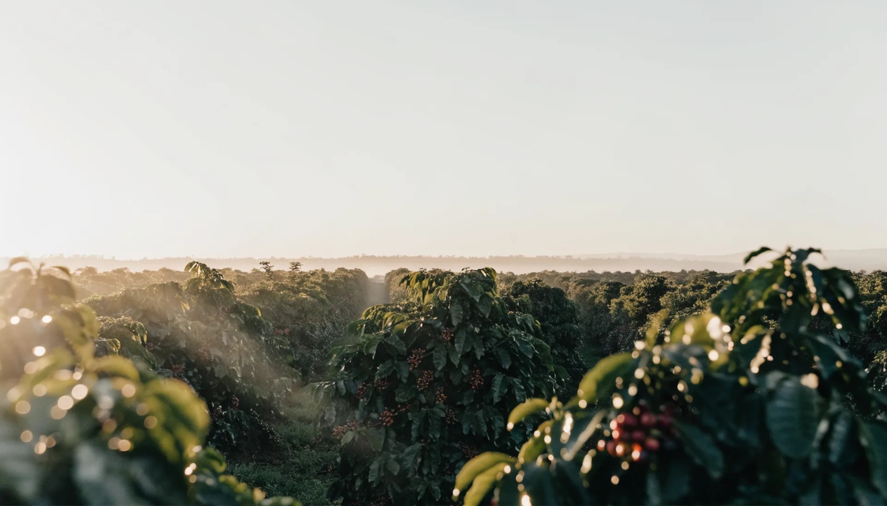
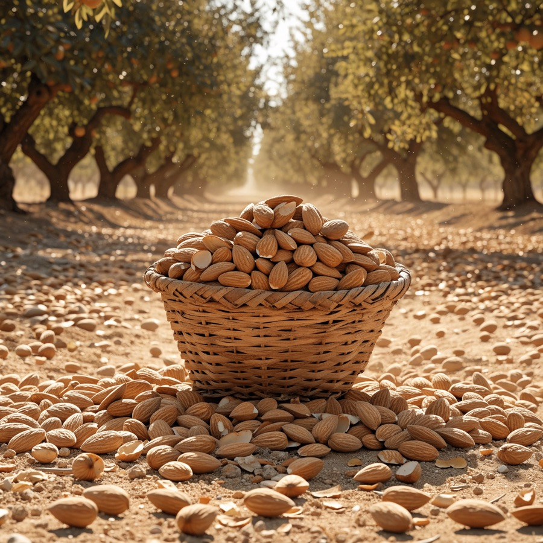
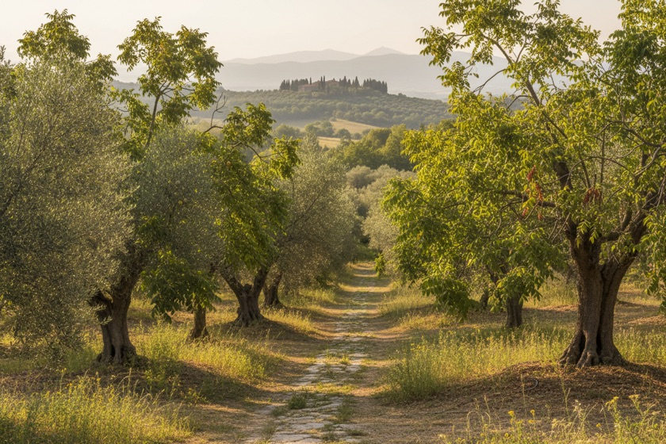

قصتنا
من الطبيعة إليك — جاد تقدم قهوة ومكسرات وبهارات طبيعية عالية الجودة، مصدرها الأصلي في قلب كل منتج.

قهوة ومكسرات وبهارات طبيعية، مصدرها الأصلي في قلب كل منتج.



من الطبيعة إليك — جاد تقدم قهوة ومكسرات وبهارات طبيعية عالية الجودة، مصدرها الأصلي في قلب كل منتج.
فلكل مُنتَج حكايته الخاصة؛ وبسبب اهتمامنا المستمر بالتفاصيل، فإن كل خطوة في عملية الإنتاج في جاد تُدار بعناية لضمان إنتاج منتجات عالية الجودة يتم توصيلها بحب وملئها بالمكونات المغذية من الطبيعة الأم.
نعطي الأولوية لابتكار المنتجات ونأخذ في الاعتبار اتجاهات السوق ورغبات العملاء وتغيُّر الأذواق، كما نشجع دائمًا نمط الحياة الصحي؛ لأن هدفنا ليس فقط تغذية الجسم، بل تغذية العقل والروح أيضًا.

بدأت الحكاية من علاقة مباشرة مع المزارعين — اختيار المحصول من مصدره، وموسم بعد موسم نتعلم إن الجودة بتبدأ قبل ما المنتج يوصل المصنع بكتير.
افتتحنا أول محمصة خاصة بينا، وبقى التحميص بإيدينا من أول ما نستلم الحبة لحد ما توصل درجة التحميص اللي إحنا عايزينها بالظبط.
وسّعنا من القهوة للمكسرات والبهارات، بنفس المبدأ — مصدر معروف، وتشغيل بنشرف عليه خطوة بخطوة، من غير أي إضافات.
بدأنا نشتغل على هوية تجمع ده كله تحت اسم واحد: منتجات طبيعية، واضحة في مصدرها، وسهل إن أي حد يعرف بالظبط بيشتري إيه.
من الطبيعة إليك — قهوة ومكسرات وبهارات طبيعية، مصدرها الأصلي في قلب كل منتج، بتوصلك من غير وسطاء.